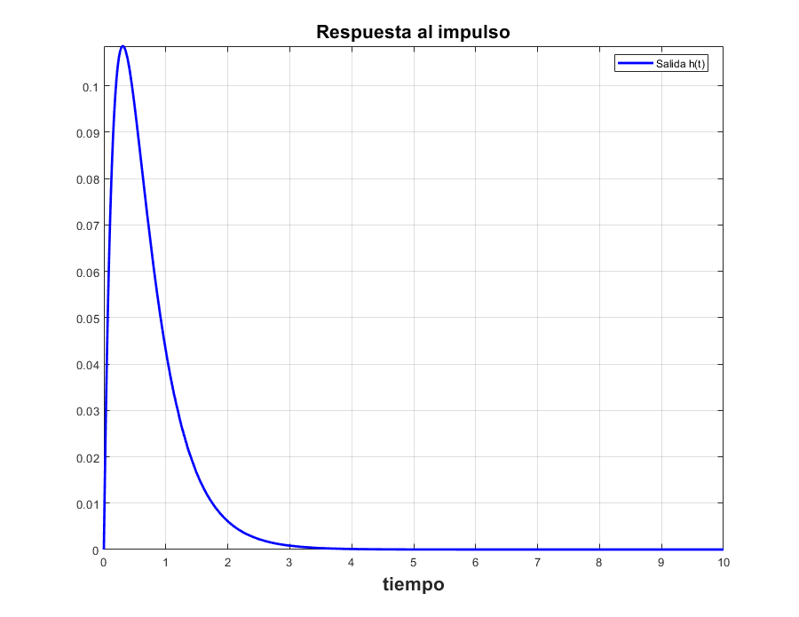
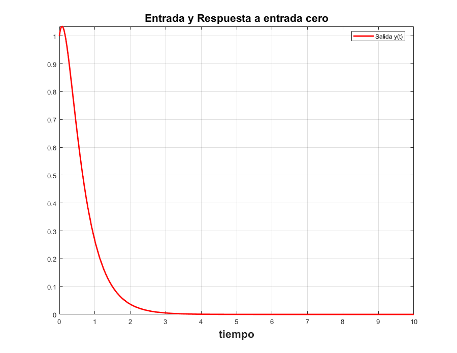
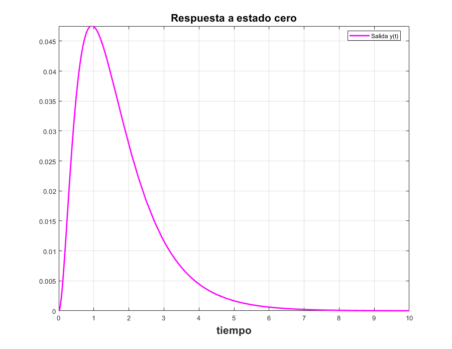
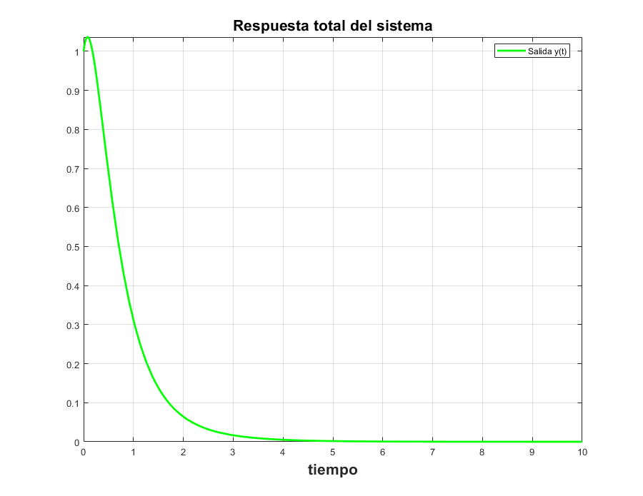
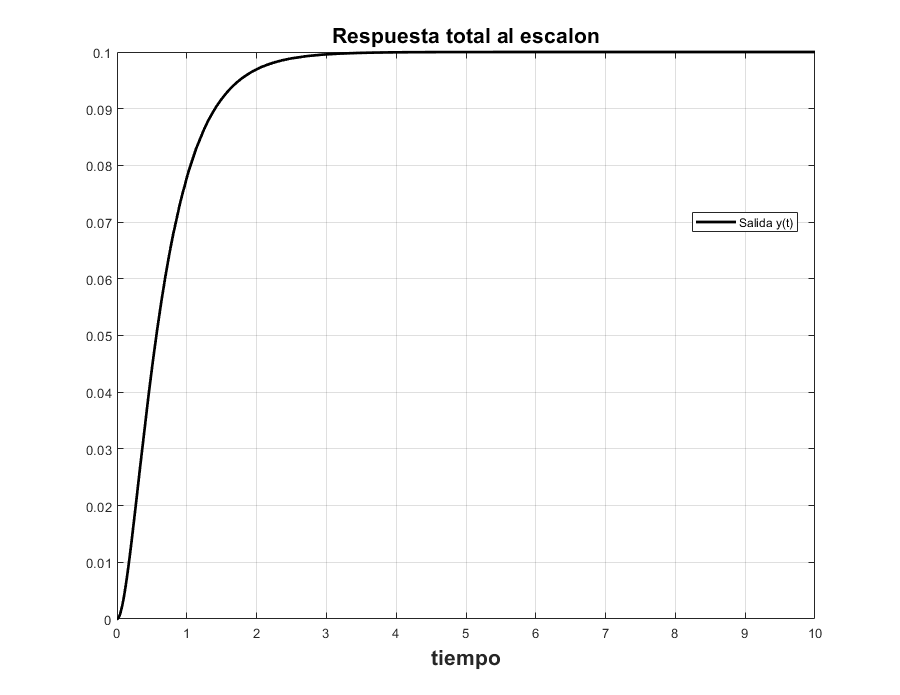
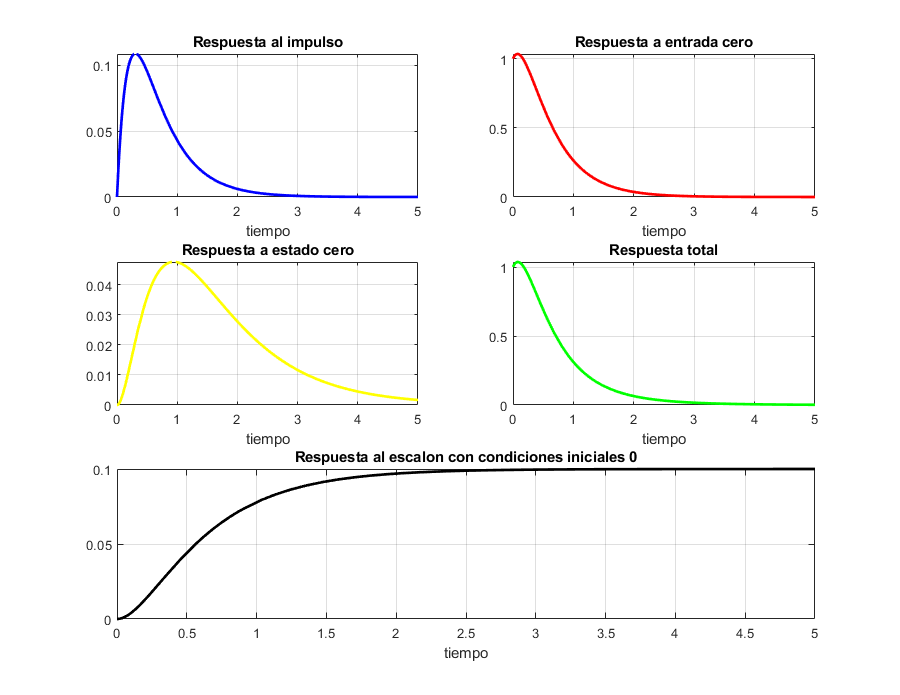

Práctica 6: Sistemas diferenciales
Integrantes
- Alvarez Garcia Elian Alexander
- Diego Vertiz Alexis
- Marquina Zendejas Victor
- Mendivil Herrera Jesus Alejandro
UPIITA IPN Señales y Sistemas Grupo: 2TV1
Contents
1. Funcion de tranferencia
Muestra la función de transferencia del sistema
Codigo: enlace
syms t; sympref('HeavisideAtOrigin', 1); FunTransferencia([10 7 1], [1])
1 ------------- 2 s + 7 s + 10 ans = 1/(s^2 + 7*s + 10)
2. Respuesta al impulso
Muestra la respuesta al impulso (simbólico, gráfica)
Codigo: enlace
ResImpulso([10 7 1],[1],10)
exp(-2 t) exp(-5 t)
--------- - ---------
3 3
ans(t) =
exp(-2*t)/3 - exp(-5*t)/3
 3. Respuesta a entrada cero
Muestra la respuesta a entrada cero (simbólico, gráfica)
Codigo: enlace
ResEntradaCero([10 7 1], [1], [1 1],10)
exp(-2 t) 2 - exp(-5 t) ans(t) = 2*exp(-2*t) - exp(-5*t)
4. Respuesta a estado cero (simbólico, gráfica)
Muestra la respuesta a estado cero
Codigo: enlace
ResEstadoCero([10 7 1], [1], exp(-t)*heaviside(t),10)
exp(-t) exp(-2 t) exp(-5 t) ------- - --------- + --------- 4 3 12 ans(t) = exp(-t)/4 - exp(-2*t)/3 + exp(-5*t)/12
5. Respuesta total
Muestra la respuesta total (simbólico, gráfica)
Codigo: enlace
ResTotal([10 7 1],[1], [1 1], exp(-t)*heaviside(t),10)
exp(-t) exp(-2 t) 5 exp(-5 t) 11 ------- + ----------- - ------------ 4 3 12 ans(t) = exp(-t)/4 + (5*exp(-2*t))/3 - (11*exp(-5*t))/12
6. Respuesta total al escalón con condiciones iniciales 0
La respuesta total al escalón con condiciones iniciales 0 (simbólico, gráfica)
Codigo: enlace
ResEsc([10 7 1],[1], heaviside(t), 10)
exp(-5 t) exp(-2 t) 1
--------- - --------- + --
15 6 10
ans(t) =
exp(-5*t)/15 - exp(-2*t)/6 + 1/10
 7. Graficas
Usando subplot, depliega una figura con 5 gráficas
Codigo: enlace
Respuestas
exp(-2 t) exp(-5 t)
--------- - ---------
3 3
exp(-2 t) 2 - exp(-5 t)
exp(-t) exp(-2 t) exp(-5 t)
------- - --------- + ---------
4 3 12
exp(-t) exp(-2 t) 5 exp(-5 t) 11
------- + ----------- - ------------
4 3 12
exp(-5 t) exp(-2 t) 1
--------- - --------- + --
15 6 10
